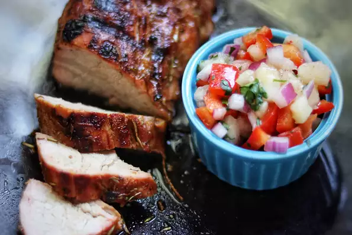

Let's Make:
Grilled Caribbean-Spiced Pork Tenderloin with Peach Salsa!
Serves: 6 people.

Ingredients:
- 3/4 cup fresh peaches, peeled and diced
- 1 small red bell pepper, chopped
- 2 tablespoons finely chopped red onion
- 2 tablespoons minced fresh cilantro
- 1 tablespoon lime juice
- 1 clove garlic, minced
- 1/8 teaspoon salt
- 1/8 teaspoon ground black pepper
Directions:
- Combine peaches, bell pepper, red onion, cilantro, lime juice, garlic, salt, and pepper in a bowl. Set peach salsa aside.
- Combine olive oil, brown sugar, Caribbean jerk seasoning, thyme, rosemary, and seasoned salt in a second small bowl. Rub tenderloin with the spice mixture.
- Preheat an outdoor grill for medium heat and lightly oil the grate.
- Place tenderloin on hot grill and cook covered for 9 to 11 minutes. Turn and grill until tenderloin is slightly pink in the center, 9 to 11 minutes more.
- An instant-read thermometer inserted into the center should read at least 145 degrees F (63 degrees C). Remove from heat, cover, and let sit for 5 minutes before slicing. Serve with peach salsa.